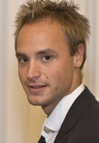

Curriculum Vitae

Yannick Wirner est né en 1983 à Freiburg/Breisgau en Allemagne de père allemand et de mère française.
A l´âge de 6 ans, il reçoit son premier cours de piano chez Angelika Hamori. Ensuite, jusqu´en 1998, il poursuit son éducation pianistique chez Marjana Andraschke.
A l´âge de 15 ans, il réussi l´examen d´entrée à la Musikhochschule de Freiburg/Breisgau où il commence les études de piano solo dans la classe de James Avery. Pendant ces années-là, il participe à de nombreux masterclasses, de stages de musique de chambre et de concours en Europe. Il y gagne, entre-autres, un 1er prix dans un concours national pour jeunes pianistes en allemagne.
En 2003, Yannick Wirner fait son Baccalauréat et continue les études de piano solo de 1er cycle à la Musikhochschule Karlsruhe/Allemagne dans la classe de Kalle Randalu. Pour le 2ème cycle, il entre dans la classe de Michael Uhde et de Markus Stange ou il reçoit son Diplome de soliste avec un premier prix à l´unanimité en 2008.
Yannick Wirner gagne le même prix pour le diplome de musique de chambre qu´il etudie en cursus "Master" de 2009 à 2011 à la Musikhochschule de Karlsruhe.
Depuis, il fait beaucoup de concerts notamment en France, Belgique, Italie, Espagne, Suisse, Canada, et en Allemagne. En autres il a donné des concerts à l`Abbaye de Royaumont à Paris, "DeSingel" à Anvers, "Alte Oper" de Francfort, Tonhalle Düsseldorf, Philharmonie de Cologne, Konzerthaus de Berlin, Philharmonie de Berlin, Philharmonie de Munich, au ZKM et au SWR à Karlsruhe, au « festival de Zermatt», à la « Internationale Messiaen-Woche » (Neustadt), ainsi qu´au « Festival Berlioz », au «Festival international de musique de Wissembourg», au fameux «Ludwigsburger Schlossfestspiele» et au «Heidelberger Frühling».
En 2008, Yannick Wirner reçoit une bourse pour participer aux Masterclasses Internationales de l`Université de Rio de Janeiro/Brésil auxquels il y travaille comme assistant de la classe de piano (Prof. Michael Uhde) et comme accompagnateur de la classe de chant (Prof. Mitsuko Shirai) ainsi que de la classe de violon
(Prof. Nachum Erlich).
Par ailleurs, il fait régulièrement des enregistrement solo et de musique de chambre pour les grandes radios allemandes, tel que le SWR et le Bayerische Rundfunk.
Pendant ces années, Yannick Wirner participe à de nombreux masterclasses, avec Ilja Scheps, Roland Keller, Bruno Canino, Géry Moutier, Ivan Klansky, Sergio Perticaroli, Irina Berkovich, Martino Tirimo, Wolf Harden ainsi que le Quatuor « Fauré ».
Depuis 2011 Yannick Wirner enseigne lui-même à la Musikhochschule de Karlsruhe et vie à Berlin.
Un premier CD apparait en 2010 avec des Oeuvres pour deux pianos de Wolfgang Rihm et d´Olivier Messiaen. Une émission entière lui fut consacré sur France Musique par Gaelle le Gallic.
Un second CD apparait en 2011 avec des Oeuvres pour piano seul de Franz Schubert et de Wolfgang Rihm.
Le troisième CD, sorti en 2014, est uniquement consacré au compositeur argentin Daniel H. Sprintz.
Particulièrement attiré par la pratique orchestrale, il a eu l’occasion de travailler avec l´Orchestre du conservatoire et l`Orchestre de l´Opéra de Karlsruhe, et l’ Orchestre de la Junge deutsche Philharmonie dont il est devenu membre d´honneur à vie en 2015. Il a joué sous la baguette de chefs prestigieux : Sir Neville Marriner, Jonathan Nott, Andrej Boreyko, Susanna Mälkki, Kristjan Järvi, Ralf Gothoni, Peter Rundel et Steven Sloane entre autres.
De 2005-2011, Yannick Wirner est membre de l´ensemble de musique contemporaine de la Musikhochschule de Karlsruhe sous la direction de Gérard Buquet.
Dans ce cadre, entre autres, il crée beaucoup d´oeuvres de jeunes compositeurs, notamment de Enno Poppe, Johannes Motschmann, Moritz Eggert, Vadim Werbitzky, Matthias Ockert et de Daniel Hugo Sprintz.
Dans le domaine de la musique contemporaine, son interprétation et son expérience évoluent grâce à des projets et des cours particuliers avec des compositeurs tel que Wolfgang Rihm, Henry Fourès, les pianistes Kaya Hahn, Ueli Wiget, Nicolas Hodges et Pi-Hsien Chen ainsi qu`en participant à plusieurs reprises aux stages des « Darmstädter Ferienkurse für Neue Musik » et au stage « Jeunesse moderne » dans le cadre duquel il reçoit de nombreuses bourses.
En parallèle aux études de piano, Yannick Wirner fait des études de sciences culturelles qu´il termine à l`Université de Karlsruhe avec mention « très bien ».